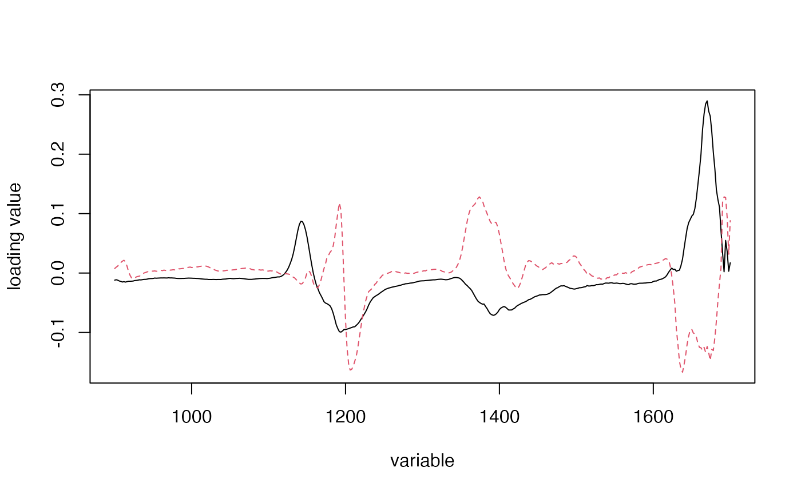
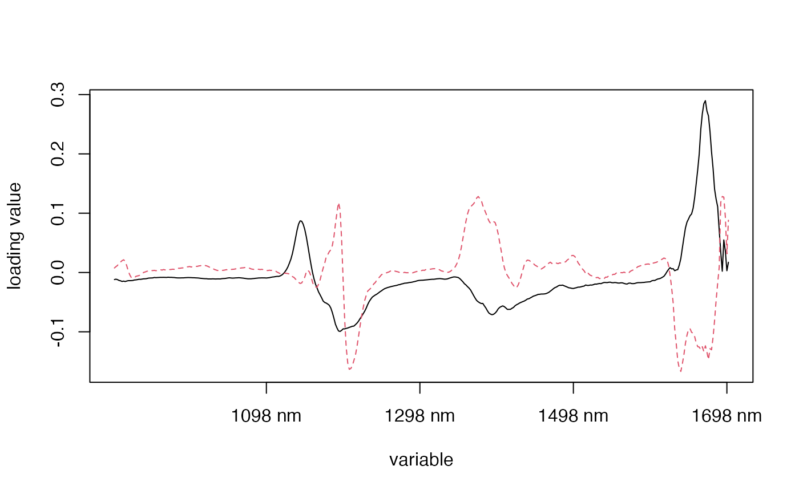
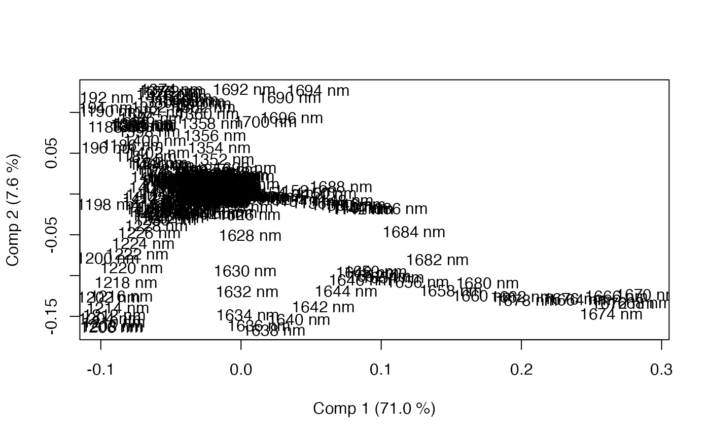

Functions to make scatter plots of scores or correlation loadings, and scatter or line plots of loadings.
Usage
scoreplot(object, ...)
# Default S3 method
scoreplot(
object,
comps = 1:2,
labels,
identify = FALSE,
type = "p",
xlab,
ylab,
estimate,
newdata,
...
)
# S3 method for class 'scores'
plot(x, ...)
loadingplot(object, ...)
# Default S3 method
loadingplot(
object,
comps = 1:2,
scatter = FALSE,
labels,
identify = FALSE,
type,
lty,
lwd = NULL,
pch,
cex = NULL,
col,
legendpos,
xlab,
ylab,
pretty.xlabels = TRUE,
xlim,
...
)
# S3 method for class 'loadings'
plot(x, ...)
corrplot(
object,
comps = 1:2,
labels,
plotx = TRUE,
ploty = FALSE,
radii = c(sqrt(1/2), 1),
identify = FALSE,
type = "p",
xlab,
ylab,
col,
...
)Arguments
- object
an object. The fitted model.
- ...
further arguments sent to the underlying plot function(s).
- comps
integer vector. The components to plot.
- labels
optional. Alternative plot labels or \(x\) axis labels. See Details.
- identify
logical. Whether to use
identifyto interactively identify points. See below.- type
character. What type of plot to make. Defaults to
"p"(points) for scatter plots and"l"(lines) for line plots. Seeplotfor a complete list of types (not all types are possible/meaningful for all plots).- xlab, ylab
titles for \(x\) and \(y\) axes. Typically character strings, but can be expressions or lists. See
titlefor details.- estimate
optional character vector passed to
scores()soscoreplot()can request the training, CV or test estimate when plotting.- newdata
optional data frame supplied to
scores()whenestimate = "test".- x
a
scoresorloadingsobject. The scores or loadings to plot.- scatter
logical. Whether the loadings should be plotted as a scatter instead of as lines.
- lty
vector of line types (recycled as neccessary). Line types can be specified as integers or character strings (see
parfor the details).- lwd
vector of positive numbers (recycled as neccessary), giving the width of the lines.
- pch
plot character. A character string or a vector of single characters or integers (recycled as neccessary). See
pointsfor all alternatives.- cex
numeric vector of character expansion sizes (recycled as neccessary) for the plotted symbols.
- col
character or integer vector of colors for plotted lines and symbols (recycled as neccessary). See
parfor the details.- legendpos
Legend position. Optional. Ignored if
scatterisTRUE. If present, a legend is drawn at the given position. The position can be specified symbolically (e.g.,legendpos = "topright"). This requires >= 2.1.0. Alternatively, the position can be specified explicitly (legendpos = t(c(x,y))) or interactively (legendpos = locator()).- pretty.xlabels
logical. If
TRUE,loadingplottries to plot the \(x\) labels more nicely. See Details.- xlim
optional vector of length two, with the \(x\) limits of the plot.
- plotx
locical. Whether to plot the \(X\) correlation loadings. Defaults to
TRUE.- ploty
locical. Whether to plot the \(Y\) correlation loadings. Defaults to
FALSE.- radii
numeric vector, giving the radii of the circles drawn in
corrplot. The default radii represent 50% and 100% explained variance of the \(X\) variables by the chosen components.
Details
plot.scores is simply a wrapper calling scoreplot, passing all
arguments. Similarly for plot.loadings.
scoreplot is generic, currently with a default method that works for
matrices and any object for which scores returns a matrix.
The default scoreplot method makes one or more scatter plots of the
scores, depending on how many components are selected. If one or two
components are selected, and identify is TRUE, the function
identify is used to interactively identify points.
Also loadingplot is generic, with a default method that works for
matrices and any object where loadings returns a matrix. If
scatter is TRUE, the default method works exactly like the
default scoreplot method. Otherwise, it makes a lineplot of the
selected loading vectors, and if identify is TRUE, uses
identify to interactively identify points. Also, if
legendpos is given, a legend is drawn at the position indicated.
corrplot works exactly like the default scoreplot method,
except that at least two components must be selected. The
“correlation loadings”, i.e. the correlations between each variable
and the selected components (see References), are plotted as pairwise
scatter plots, with concentric circles of radii given by radii. Each
point corresponds to a variable. The squared distance between the point and
origin equals the fraction of the variance of the variable explained by the
components in the panel. The default radii corresponds to 50% and
100% explained variance. By default, only the correlation loadings of the
\(X\) variables are plotted, but if ploty is TRUE, also the
\(Y\) correlation loadings are plotted.
scoreplot, loadingplot and corrplot can also be called
through the plot method for mvr objects, by specifying
plottype as "scores", "loadings" or
"correlation", respectively. See plot.mvr.
The argument labels can be a vector of labels or one of
"names" and "numbers".
If a scatter plot is produced (i.e., scoreplot, corrplot, or
loadingplot with scatter = TRUE), the labels are used instead
of plot symbols for the points plotted. If labels is "names"
or "numbers", the row names or row numbers of the matrix (scores,
loadings or correlation loadings) are used.
If a line plot is produced (i.e., loadingplot), the labels are used
as \(x\) axis labels. If labels is "names" or
"numbers", the variable names are used as labels, the difference
being that with "numbers", the variable names are converted to
numbers, if possible. Variable names of the forms "number" or
"number text" (where the space is optional), are handled.
The argument pretty.xlabels is only used when labels is
specified for a line plot. If TRUE (default), the code tries to use
a ‘pretty’ selection of labels. If labels is
"numbers", it also uses the numerical values of the labels for
horisontal spacing. If one has excluded parts of the spectral region, one
might therefore want to use pretty.xlabels = FALSE.
Note
legend has many options. If you want greater control
over the appearance of the legend, omit the legendpos argument and
call legend manually.
Graphical parametres (such as pch and cex) can also be used
with scoreplot and corrplot. They are not listed in the
argument list simply because they are not handled specifically in the
function (unlike in loadingplot), but passed directly to the
underlying plot functions by ...{}.
Tip: If the labels specified with labels are too long, they get
clipped at the border of the plot region. This can be avoided by supplying
the graphical parameter xpd = TRUE in the plot call.
The handling of labels and pretty.xlabels in coefplot
is experimental.
References
Martens, H., Martens, M. (2000) Modified Jack-knife Estimation of Parameter Uncertainty in Bilinear Modelling by Partial Least Squares Regression (PLSR). Food Quality and Preference, 11(1–2), 5–16.
Examples
data(yarn)
mod <- plsr(density ~ NIR, ncomp = 10, data = yarn)
## These three are equivalent:
if (FALSE) { # \dontrun{
scoreplot(mod, comps = 1:5)
plot(scores(mod), comps = 1:5)
plot(mod, plottype = "scores", comps = 1:5)
loadingplot(mod, comps = 1:5)
loadingplot(mod, comps = 1:5, legendpos = "topright") # With legend
loadingplot(mod, comps = 1:5, scatter = TRUE) # Plot as scatterplots
corrplot(mod, comps = 1:2)
corrplot(mod, comps = 1:3)
} # }
# Use of labels in plots and x scales
data(gasoline)
colnames(gasoline$NIR) <- paste(seq(900, 1700, 2), "nm")
gas <- plsr(octane ~ NIR, ncomp = 10, data = gasoline)
loadingplot(gas, labels="numbers")

loadingplot(gas, labels="names")

loadingplot(gas, labels="names", scatter=TRUE)
